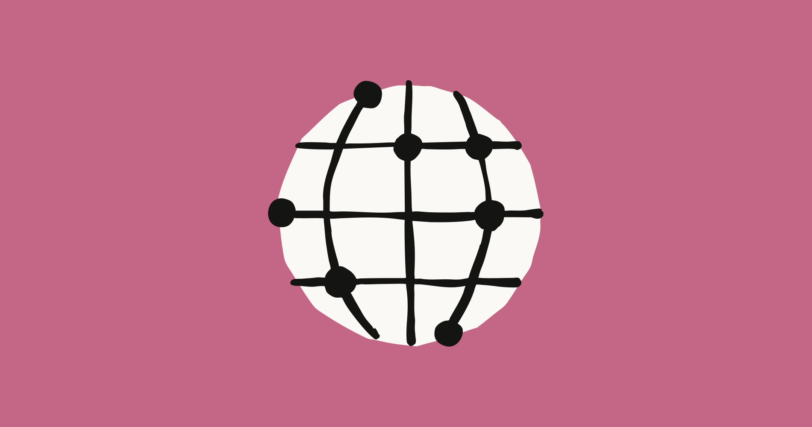
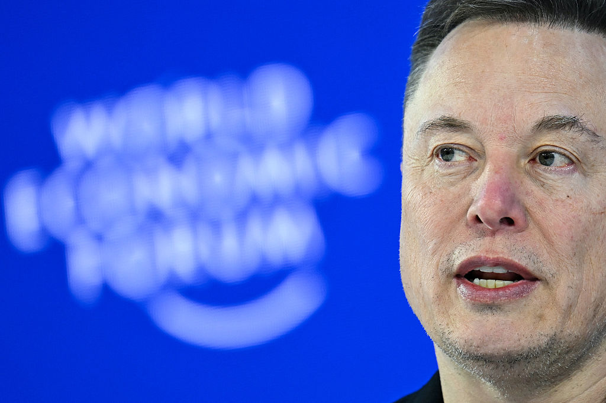
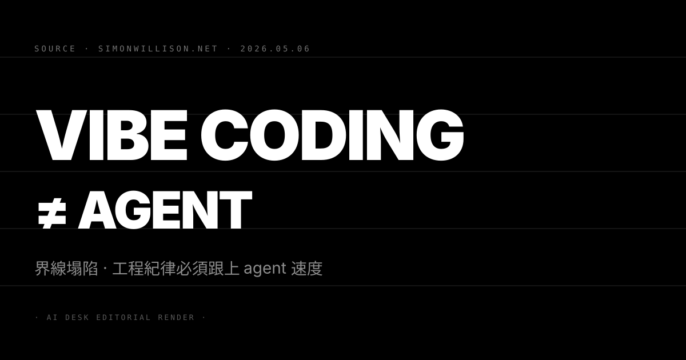

N°50 Anthropic 把 SpaceX Colossus 1 整廠買下 · Claude rate limit 上調 · 同步加碼 22 萬張 GPU

Pin · Anthropic 不只是租算力 · 是把 frontier 廠的供電與 GPU 一次性收入體內。
發生什麼
Anthropic 5 月 6 日在官方 News 公告兩件事。第一件 Anthropic 與 SpaceX 簽下協議 包下整座 Colossus 1 資料中心的全部算力 規模超過 300MW、22 萬張 NVIDIA GPU 一個月內全數上線。第二件 連帶把終端 Claude 體驗一次拉高：Pro、Max、Team、Enterprise 的 Claude Code 五小時 rate limit 直接翻倍 同時取消 Pro 與 Max 的尖峰時段限制 Claude Opus 的 API rate limit 也大幅放寬。
Anthropic 把這次 SpaceX 協議放在更大的算力組合裡盤點。已宣布的還包括與 Amazon 高達 5GW 的合作（含 2026 年底前接近 1GW 的新增容量）、與 Google 加 Broadcom 的 5GW 合作（2027 年起陸續上線）、與 Microsoft 加 NVIDIA 的 300 億美元 Azure 戰略合作 以及與 Fluidstack 在美國 AI 基礎設施的 500 億美元投資。三家硬體底座 AWS Trainium、Google TPU、NVIDIA GPU 同時跑 訓練與推論分散下注。
另一個容易被忽略的細節：Anthropic 在公告底寫明「已表達與 SpaceX 一起發展多個 GW 軌道 AI 算力（orbital AI compute）的合作意向」。這是 frontier lab 第一次正式把太空算力寫進公開戰略文件。
為什麼重要
第一 Claude 端使用體驗的瓶頸這一週實質鬆動。過去六個月精英開發者社群在 X 與 HN 反覆抱怨的兩件事是 Claude Code 的 5 小時 cap 太緊、以及 Opus API rate limit 在尖峰時段不夠。今天這兩條同時放寬 配合 5 月 6 日（昨日 N°46）finance agents 落地的金融垂直化進攻 Anthropic 把「企業端 ARR 上得去嗎」這個 9000 億估值（5/1 N°29）最大質疑點 用「容量先行 + 垂直深耕」雙軸對沖。
第二 Anthropic 被 Pentagon 拒絕後的補課策略已經完整成形。5/4 N°39 Anthropic 因 usage policy 紅線被踢出 frontier 廠政府訂單名單。今天的 SpaceX 合作補上了一個 Pentagon 給不了的東西：跟 Musk 體系（含 Starlink、軌道資源）的供應鏈整合。Anthropic 的算力路線圖從 hyperscaler（AWS、Azure、Google）擴張到 neocloud（Fluidstack）再擴張到 Musk 軌道資源 三層異質供應商一次到位 即使被單一政府或單一硬體商卡住也不致命。
第三 frontier 廠的競爭軸從「模型品質」徹底擴張到「電力 + GPU + 軌道」全棧。OpenAI 5/4 N°43 拉 Blackstone 做企業合資、5/5 N°44 與 AWS 簽 500 億美元、4/30 N°07 上 AWS Bedrock。今天 Anthropic 把 SpaceX 拉進名單後 OpenAI 必然回敬一條「我也有獨立算力路線」的新公告 候選包括與 Oracle Stargate 的續約擴大、或對 CoreWeave/Crusoe 的策略入股。frontier 廠的算力佈局速度在 Q3 會明顯壓過模型本身的迭代節奏。
我們的判斷
三個看點：
(1) Anthropic 在 6 至 8 週內必然推出對標的訓練端公告。SpaceX 合作公告偏推論導向（Pro、Max、Opus rate limit 直接受惠）但 Anthropic 沒有揭露 Colossus 1 中有多少容量會分給訓練。預期 Anthropic 在 Q3 內會宣布下一代 Claude 的訓練起跑 並把 Colossus 1 的訓練容量切片寫進公告 這條訊息是判斷 Claude 4.5 或 5 series 時間表的客觀錨點。
(2) Musk 的 IPO 視窗會把 SpaceX 與 xAI 合併估值往 1 兆美元推。SpaceX 把資料中心容量整廠賣給 Anthropic 等於把「衛星寬頻 + 火箭 + 算力 + 軌道 AI」打包成單一資本故事。對 SpaceX 即將推進的 IPO 是直接利好 也對等價於 Anthropic 把自己鎖進 Musk 軌道供應商的長期依賴。對 Anthropic 治理風險：Musk 在公開敘事上對 Anthropic 與 OpenAI 立場長期不對稱 這條合作能否穿越 2027 年 Musk–OpenAI 訴訟結果是中期變數。
(3) 反方觀點：軌道 AI 算力的可行性短期被嚴重高估。Anthropic 把 orbital compute 寫進公告是行銷遠多於工程。當前太空中部署 GPU 級數據中心受限於發射成本、散熱、輻射屏蔽、頻寬下行四條真實技術瓶頸 SpaceX 自己 Starshield 計畫在這幾條上的進度都未公開。預期軌道算力在 2028 年前不會貢獻可量化算力 這條敘事真正的價值是替 SpaceX IPO 故事加分而非短期工程紅利。對 Rick 社群讀者：建議把 orbital compute 段落視為公關動作 真正可下注的是 Colossus 1 上線後 Pro/Max 用戶的體感改善曲線。
N°51 xAI 變 neocloud · Russell Brandom 解讀 Musk 把 AI 公司翻成資料中心公司

Pin · 同一筆交易 · Anthropic 看到的是算力 · TechCrunch 看到的是 xAI 的事業重組。
發生什麼
TechCrunch 記者 Russell Brandom 5 月 6 日下午發稿 對 Anthropic–xAI Colossus 1 交易給出截然不同的解讀視角。文章核心命題是：xAI 表面上是 frontier AI 公司 但這筆交易揭露 xAI 真正的事業可能是「賣資料中心容量」而非「訓練前沿模型」。
Brandom 列出三條結構性訊息支撐這個論點。其一 xAI 已經把訓練工作搬到更新的 Colossus 2 等於告訴市場 Colossus 1 的算力對 xAI 自家用是「過剩產能」。其二 xAI 主力消費端產品 Grok 在 image generation 醜聞後使用量下滑明顯 公司內部對於要不要繼續把算力拿來餵 Grok 的優先順序顯然降低。其三 SpaceX 與 xAI 已宣告合併並推進 IPO 把資料中心容量翻譯成「向 Anthropic 收的多年合約收入」對 IPO pitch 是直接加分 — 等於 CoreWeave 那種 neocloud 估值倍數。
更廣的對照是 Brandom 比對 Google 與 Meta：Sundar Pichai 上個月承認 Google Cloud 收入低於潛在水準 因為公司把 GPU 留給自家 AI 產品而非租出去；Meta 直接組了一個新 cloud 體系專門服務 Zuckerberg 自家的 AI 野心。Google 與 Meta 的選擇是「自用優先」 xAI 卻反向選擇「賣給 Anthropic」 這個取捨揭露了 Musk 對 xAI 真正的事業定位。
為什麼重要
第一 frontier 廠的事業模型分岔正式被點明。過去兩年 frontier 玩家被一律當成「同一類公司」 但今天這條交易揭露兩種截然不同的事業選擇：OpenAI、Anthropic、Google、Meta 走「壟斷模型 + 自家分發」路線 算力是後勤；xAI 走「先賺算力錢 模型是 by-product」路線 模型是 marketing。對二級市場分析師：xAI 估值倍數應該往 CoreWeave、Crusoe 這類 neocloud 靠 而不是往 OpenAI、Anthropic 的 frontier lab 倍數靠。
第二 SpaceX 母公司的 AI 故事第一次被資本市場可量化。把 xAI 與 SpaceX 合併 加上 Anthropic 包下 Colossus 1 的多年合約 Brandom 推算這筆協議「可能值數十億美元」。對 SpaceX 即將進行的 IPO 是非常具體的營收故事 — 過去太空業務的營收受發射節奏影響波動大 算力合約則是穩定多年期收入 對 IPO 估值是優質訊號。
第三 Grok 的戰略地位被默默降級。把 Colossus 1 賣給最直接的競爭對手 Anthropic 等於 Musk 公開承認「Grok 不需要這麼多算力」。這條訊息對 Grok 的開發者生態是負面：xAI 對 Grok 的長期投入承諾在內部優先順序上明顯下調 X（Twitter）整合的 Grok 介面後續迭代速度會放慢。對 X 平台用戶體驗：Grok 變成「夠用就好」的功能而非戰略產品。
我們的判斷
三個看點：
(1) xAI 在 Q3 內會公開把自己重新定位為「Compute + AI」雙線公司。Brandom 點出的事業重組真實存在。預期 xAI 在下一輪募資或 SpaceX IPO 路演中 會明確切出「neocloud 業務」與「Grok 模型業務」兩條 P&L 並把 neocloud 業務當主敘事。對投資人：判斷 xAI 真實估值的關鍵指標從「Grok DAU」轉向「Colossus 上線容量 + 客戶名單長度」。
(2) Anthropic 跟 xAI 之間出現中期戰略張力。Anthropic 短期靠 Colossus 1 解決算力瓶頸但長期被鎖進 Musk 體系。一旦 Musk 在公開敘事上再次對 Anthropic 立場反轉（如 OpenAI 訴訟發展、或 X 平台 Grok 重新加碼）合約執行端會出現摩擦。預期 Anthropic 會在 Q4 內加碼 Fluidstack、CoreWeave 等替代 neocloud 的容量份額 把對 Musk 軌道的依賴度壓在 25% 以下。
(3) 反方觀點：把 xAI 視為「主要做 neocloud」可能誤讀 Musk 的真正意圖。Musk 過去多次在子公司之間做策略性現金流調度（如 Tesla 早期把 SolarCity 整合進 Tesla Energy） Colossus 1 賣給 Anthropic 也可能只是 SpaceX IPO 前的一次性現金流操作 而非長期事業重組。判斷依據是 Q3 內 xAI 是否再公佈新一座主訓練場（暗示繼續走 frontier 路線）或主動公開「我們現在以算力業務為主」（確認 neocloud 路線）。Rick 社群讀者本月內可關注 X 上 Musk 對 xAI 的角色描述 措辭從「AI 公司」變成「AI infra 公司」會是關鍵訊號。
N°52 Trump 政府 AI safety 大轉彎 · 一個還沒公開的 Anthropic 新模型把白宮嚇到

Pin · 一年前嘲笑 doomer 的官員 · 現在悄悄重新撿起 Biden 留下的上線前審查框架。
發生什麼
Platformer 主筆 Casey Newton 5 月 5 日發稿揭露 Trump 政府對 AI safety 的立場出現實質轉向。文章對照兩個時間點。一年前 2025 年 2 月在巴黎 AI Action Summit 副總統 JD Vance 公開警告「AI 的未來不會被那些對安全焦慮（hand-wringing about safety）的人贏走」；David Sacks 把 doomer 陣營稱為「doomer industrial complex」搞「以恐慌為基礎的精緻監管俘獲」；Office of Science and Technology Policy 主任 Michael Kratsios 對國際 AI 治理嗤之以鼻。Trump 在第二任就職第三天直接撤掉 Biden 簽的 AI 安全測試行政命令。
但根據 New York Times 記者 Tripp Mickle 等四人本週的報導 Trump 政府正在內部討論一道新的行政命令 要建立一個 AI 工作組（AI working group）把科技高管與政府官員拉到同一張桌子 評估監管程序 — 包括「對新 AI 模型啟動正式的政府審查機制」。這個機制候選版本明顯參考英國模式 由多個政府機構共同確保 AI 模型符合特定安全標準。
什麼變了？Newton 點出觸發點是 Anthropic 一個尚未公開的新大型模型 — 目前在 preview 階段僅對「大約 50 家公司」開放 — 在 cyber 攻擊能力測試上展現出政府認為構成國家安全風險的水準。白宮目前反對 Anthropic 把 preview 規模從 50 家擴張到 120 家的計畫 同時也對 Anthropic 的 usage policy 邊界表達疑慮（Newton 同步揭露白宮擔心 Anthropic 的政策在某些 case 對政府過度設限）。
為什麼重要
第一 美國 AI 監管的 regulatory 視窗在過去 16 個月被認為「徹底關閉」 但今天事實上重新打開。Trump 政府在 Q1 對州級 AI 法案的施壓（在 Nebraska、Tennessee 推共和黨議員撤回安全與透明法案）配合 White House 對聯邦法規的全面鬆綁 業界普遍認為 2026 年是「美國監管真空期」。今天 Newton 揭露的內部討論直接打破這個共識 frontier 廠對「需不需要把監管回應寫進 Q3 路線圖」這個判斷必須重置。
第二 Anthropic 從 frontier safety 路線的最大受益者變成第一個被卡的玩家。Anthropic 過去靠 Constitutional AI、Responsible Scaling Policy、與政府建立關係累積監管信任。今天卻是 Anthropic 自家新模型的 cyber 能力觸發白宮反向設限。這個諷刺對 Anthropic 是兩面刃 — 一面證明 Anthropic 的安全評估體系真實有效（連政府都信） 另一面 preview 從 50 擴 120 被白宮反對 直接卡住 Anthropic 的企業客戶觸達速度。
第三 「上線前政府審查」這條框架若進入正式行政命令 frontier 廠的產品上線節奏會永久變慢。對標英國 AISI 模式 預審週期通常 4 至 12 週。OpenAI、Anthropic、Google、Meta 過去靠「快速迭代 + 線上修正」累積優勢的玩法將被拉慢。對中國體系（DeepSeek、Qwen、智譜、Moonshot）反而是相對利好 — 它們不受美國監管框架約束 在 frontier 能力曲線上會獲得 2 至 3 個月的暫時領先窗口。
我們的判斷
三個看點：
(1) Anthropic 短期最受傷 中期最受益。preview 從 50 擴 120 被卡 等於今年 Q3 Anthropic 在 cyber/agent 高敏場景的客戶觸達速度被壓制。但若 Trump 行政命令真的成形 Anthropic 過去三年累積的 RSP、ASL 評估方法論會被自然接收為政府審查的事實標準 — 等同於把 Anthropic 的內部流程外部化為產業合規。預期 Anthropic 在 Q3 主動推「我們的評估方法論可作為政府審查 baseline」的政策論述。
(2) 行政命令最快 6 至 10 週成形 但很可能被科技遊說集團稀釋。Trump 政府內部對 AI 監管立場分歧明顯：David Sacks、Michael Kratsios 反對；安全圈與情報體系支持。最終命令版本若出爐 預期會走「自願 + 國家安全 case-by-case」混合模式而非英國那種強制預審。對 frontier 廠：6 至 10 週內主動向白宮提供「自家 ASL 評估報告」是低成本對沖動作。
(3) 反方觀點：行政命令可能在科技遊說與選舉壓力下無疾而終。共和黨 2024 年贏在「鬆綁科技 + 反監管」 中期選舉前 Trump 不會主動承擔「壓縮美國 AI 領先」的政治成本。Newton 報導的內部討論距離實際簽署仍有距離。對讀者：本月內關注三個訊號 — Trump 是否在公開場合提及 cyber risk（行動信號）、Anthropic 是否在 X 上明確 endorse 政府審查（Anthropic 立場信號）、David Sacks 是否在 X 反擊 doomer 敘事（內鬥信號）。三條同時打到位才代表行政命令真會落地。
N°53 Simon Willison · vibe coding 與 agentic engineering 邊界塌陷 · 工程紀律必須升級

Pin · 防線開始模糊 · senior engineer 自承沒在逐行 review production code 了。
發生什麼
Simon Willison 5 月 6 日在個人部落格發文 摘錄他與 Heavybit 的 High Leverage podcast 第 9 集對話內容。Willison 是 Django 共同創辦人、最具影響力的 AI 工具書寫者之一 「vibe coding」這個詞是他在 2025 年初 firmly 切出的概念 — 用來描述「不看 code 也能讓 AI 寫出能跑的東西」的工作模式 與「agentic engineering」（資深工程師用 AI agent 提升產出但仍負責品質）切割。
今天的發文核心是一段公開承認：兩條原本明確切割的工作模式 在 Willison 自己的工作裡開始模糊。原文重點段落如下。Willison 表示：他過去把 vibe coding 視為「個人工具可以 反正壞了只痛你自己」 把 agentic engineering 視為「我有 25 年經驗 工具讓我能挑更大規模的挑戰但品質仍由我把關」 但是「當 coding agent 變得更可靠 我已經不再對它們寫的每一行 production code 做 review」。
Willison 舉具體例子：「我知道如果叫 Claude Code 寫一個跑 SQL 然後輸出 JSON 的 endpoint 它就是會做對。會自動加 test、加 doc 我知道結果會好。但是我沒在 review 那段 code」。接著是工程師最熟悉的內疚句式：「如果我沒看過 code 我把它放上 production 真的負責任嗎？」Willison 用一個比喻替自己止血：在大型組織裡 你也不會去逐行 review 隔壁團隊提供給你的 image resize service 你只會看 doc 然後用。但他自己也承認這個比喻有極限。
為什麼重要
第一 senior engineer 公開承認「我已經不在 review 每行 code」是工程文化的轉折點。Willison 在工程社群的權威性極高 他這條自白在 HN 6 小時內衝到 108 分明顯反映集體共鳴。過去三年「AI 寫的 code 必須人類 review」是 senior engineer 守住的最後一條防線 今天這條防線在最謹慎的玩家那裡都鬆動了 等於告訴整個產業：review 紀律必須從「逐行檢查」升級為「框架信任 + 抽樣稽核 + 系統測試」。
第二 對企業 CIO 是直接合規警訊。金融、醫療、政府客戶的 audit trail 需求短期不會降低 反而會因 5/6 N°48 GPT-5.5 Instant 主打「敏感領域幻覺率下降」而提高。當 senior engineer 自承沒在 review 但仍把 code 上 production 企業的稽核流程必須補上「AI 產出 code 的 provenance + test coverage + deployment gating」這三層自動化機制。對 GitHub Advanced Security、Snyk、Semgrep 是利好 對裸跑 Claude Code 的小團隊是合規風險。
第三 「vibe coding 不能上 production」這條原則被自己最有力的擁護者鬆動 對開發者教育是真實衝擊。Willison 過去用「vibe coding 只能個人工具」當教學界線 — 學員、初級工程師、bootcamp 都引用這條。今天他自己承認界線塌陷 等於同時告訴初級工程師「界線本來就不是絕對的」與「但你還沒到能塌陷它的等級」。對 bootcamp、教學內容生態（如 Frontend Masters、Pluralsight）是教材重寫壓力。
我們的判斷
三個看點：
(1) coding agent 的 review 自動化會在 Q3 變成 frontier 廠的 Killer 賣點。當 senior engineer 自承不再 review Claude Code、Cursor、Cline、Aider 這四家會競相推「我替你做 review 並產出 audit report」的功能。預期 Anthropic 在 Q3 內把 Claude Code 的 self-review 模式做成預設 在 PR 描述中強制附「我修改了什麼、改了風險、未測試的邊界 case」三段。對 GitHub Copilot Workspace 是壓力 因為它過去在這條路線上已搶先但執行品質參差。
(2) 工程師薪資結構分化加速。能用 AI agent 把 senior 產能放大 5 至 10 倍的人薪資曲線陡峭上移；只能在沒 AI 下慢慢寫 code 的中階工程師薪資被壓縮。Willison 的自白等於替「senior + AI = 超級個體」這條敘事掛官方背書。預期 H2 的 senior staff engineer 薪資中位數年增 18 至 25% 而 mid-level 普通工程師薪資中位數持平甚至微跌。
(3) 反方觀點：「我沒 review 但它應該對」這個立場在大規模事故後會反向修正。Willison 自己在文中也提到擔憂。一旦業界出現「coding agent 沒被 review 直接造成大規模 outage 或 data breach」的案例（過去半年 Lovable、Replit、Anthropic 自己都出過小型版本）監管與企業 audit 立場會迅速反向。對讀者：本季關注 SOC 2、ISO 27001 等審計框架是否開始把「AI 產出 code 必須附帶 review 證據」寫進新版要求 這條動作是反向修正的客觀訊號。